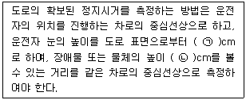
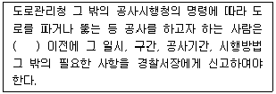
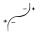
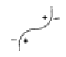
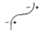
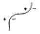
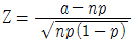

교통기사 (2005-05-29 기출문제)
1과목: 교통계획
1. OD표에서의 교통량은 주로 tij, tii, Σt로 표시된다. 이중 tii 교통량은 무엇이라 하는가?
- 발생 교통량
- 집중 교통량
- 지역내 교통량
- 발생, 집중 교통량
(정답률: 알수없음)

2. 교통의 공간적분류에서 국가교통의 교통체계에 속하지 않는 것은?
- 고속도로
- 철도
- 항만
- 간선도로
(정답률: 알수없음)
3. 통행배분모형 중 확률모형에 대한 설명으로 옳은 것은?
- 교통량이 산정된 확률을 토대로 배분되기 때문에 배정 과정이 매우 단순하다.
- 대개의 경우 초기 설정된 통행 비용을 토대로 경로선택 확률을 산정하기 때문에 도로용량에 대한 고려가 충분하다.
- 대안적 경로를 선정하기 위한 객관적 척도나 알고리즘이 우수하다.
- 확률모형에는 확률적 다이나믹 모델, 이용자 평형 다이나믹 모델 등이 있다.
(정답률: 알수없음)
4. 개별행태모형(disaggregate behavioral model)에 대한 설명으로 옳지 않은 것은?
- 개인의 통행특성자료에 근거해서 교통수요를 추정한다.
- 효용이론에 근거해서 모델이 구축된다.
- 종속변수는 통행량이며 독립변수는 존의 사회-경제 지표이다.
- 4단계 교통수요 추정모델과 비교해서 여러가지 과정을 동시에 수행할 수 있는 모델 구축이 가능하다.
(정답률: 알수없음)
5. 경제성 평가기법 중 내부수익률에 관한 설명으로 옳은 것은?
- 사업의 수익성을 측정할 수 없다.
- 평가과정과 결과를 이해하기 어렵다.
- 다른 대안과 비교하기 어렵다.
- 사업의 절대적인 규모를 고려하지 못한다.
(정답률: 알수없음)
6. 통행분포방법 중 성장률법에 대한 설명으로 옳은 것은?
- 균일성장률법은 평균성장률법보다 훨씬 정밀한 접근 방법이다.
- 평균성장률법은 예측된 장래의 통행량을 현재의 통행량으로 나눈 값으로 장래의 통행분포량을 추정하는 방법이다.
- 통행분포방법 가운데 이해하기 쉽고 적용이 용이한 방법으로 프라타법, 퍼네스법, 반복배분법, 분할배분법 등이 있다.
- 현재의 통행자의 통행형태가 장래에도 똑같다는 가정에서 출발하기 때문에 사회경제활동이 급격히 변하는 지역에서는 그 적합성이 떨어진다.
(정답률: 알수없음)
7. 다음 중 장ㆍ단기 교통계획에 대한 설명으로 옳은 것은?
- 단기교통계획은 소수의 대안, 장기교통계획은 다수의 대안
- 단기교통계획은 교통수요가 비교적 고정, 장기교통계획은 교통수요가 변화가능
- 단기교통계획은 자본집약적, 장기교통계획은 저자본비용
- 단기교통계획은 서비스지향적, 장기교통계획은 시설지향적
(정답률: 알수없음)
8. 총 25km의 노선구간을 평균통행속도 20km/h로 운행하는 버스가 최대로 실어 나를 수 있는 인원이 50명이며, 배차간격 10분일 때 필요한 차량규모와 1시간당 수송가능한 승객수는 얼마인가?
- 10대 600명
- 15대 300명
- 25대 300명
- 25대 600명
(정답률: 알수없음)
9. 다음 중 교통계획과정에서 승객이나 화물이동의 흐름을 분석하고 추정하기 위한 단위지역인 교통 존(zone)의 설정기준으로 적합하지 못한 것은?
- 각 존은 가급적 동질적인 토지이용이 포함되도록 한다.
- 주요 간선도로는 될 수 있는 한 존 경계선과 일치하지 않도록 하여야 한다.
- 자료수집의 용이성을 위해 행정구역과 가급적 일치시킨다.
- 소규모 도시의 주거지역인 경우 한 존에 대개 1000~3000명을 포함한다.
(정답률: 알수없음)
10. 관측대상이 무작위성을 갖고 있으며, 교통량이 적으며 움직임을 예측하기가 곤란한 경우의 계수분포를 설명하기 위한 이산분포는?
- 음지수 분포
- 감마 분포
- 포아송 분포
- 정규 분포
(정답률: 알수없음)
11. 다음 중 개별행태모형(disaggregated behavioral model)은?
- 중력모형(gravity model)
- 로짓모형(logit model)
- 디트로이트 모형(Detroit model)
- 원단위법(unit model)
(정답률: 알수없음)
12. 출발지, 목적지별 교통량조사(Origin and Destination Survey)방법에 해당되지 않는 사항은?
- 터미널조사(Terminal Survey)
- 폐쇄선조사(Cordon line Survey)
- 시험차 주행에 의한 방법(Moving Survey)
- 가구방문조사(Home interview Survey)
(정답률: 알수없음)
13. 교통수요관리 기법 중 교통수단의 전환을 유도하는 정책과 가장 관계가 먼 것은?
- 버스전용차로제
- 자전거 전용도로 확보
- 교통유발부담금 제도 강화
- 교통방송을 통한 통행노선의 전환
(정답률: 알수없음)
14. 도시교통계획수립을 위한 도시내부 존구분도의 축척으로 가장 적절한 것은?
- 1:600 ∼ 1:1,200
- 1:2,000 ∼ 1:5,000
- 1:50,000 ∼ 1:100,000
- 1:200,000 ∼ 1:500,000
(정답률: 알수없음)
15. 통행발생단계에서 사용되는 모형으로 유출·유입 통행량과 해당지역의 특성을 나타내는 여러 지표간의 상관관계를 구하여 이것으로부터 목표년도의 통행량을 예측하는 방법은?
- 성장율법
- 프라타법
- 중력모형법
- 원단위법
(정답률: 알수없음)
16. 어느 도심지의 주차요금에 대한 수요탄력치가 –0.2이며, 이 지역의 피크 한시간당 주차요금이 3,000원일 때 주차수요는 10,000대가 된다. 주차요금이 25%인상될 때 수요의 감소량은 얼마인가?
- 250대
- 500대
- 750대
- 1000대
(정답률: 알수없음)
17. 대중교통수단에 관한 설명 중 옳지 않은 것은?
- 대중교통은 대중을 위한 서비스이므로 서비스의 형평한 분배와 광범위한 분배를 위해 정부의 개입이 필요하다.
- 버스는 정시성이 부족하며 노선조정이 어렵다.
- 지하철은 쾌적성과 기동성은 우수하지만 대량성, 신속성이 부족하다.
- 대중교통수단은 많은 승객을 신속하게 수송할 수 있어야 한다.
(정답률: 알수없음)
18. 다음의 경전철(LRT)에 대한 설명 중 옳지 않은 것은?
- 승객승차대가 낮아 승ㆍ하차시 매우 편리하다.
- 도로상을 운행할 수는 없다.
- 시간당 수송량은 9,000~18,000명 정도이다.
- 지하철로의 전환을 염두에 두고 건설되는 예비지하철시스템도 일종의 경전철이라 볼 수 있다.
(정답률: 알수없음)
19. TSM(Transportation Systems Management)기법에서 교통수요를 억제시키는 방법으로 적합치 않은 것은?
- 버스전용차로 설치
- 노상주차제한
- 출퇴근 시간대 조정
- 자동차 통행 제한구역 설치
(정답률: 알수없음)
20. 세부가로 교통량 추정에 앞서서 개략적 노선수요파악을 위한 네트워크로서 주로 교통존중심(Zone Centroid)간을 연결하는 많은 삼각형으로 구성하는 네트워크는 다음 중 어느 것인가?
- 거미줄망도(Spider Web)
- 검사선(Screen Line)
- 교통지구도(Zone Map)
- 가로망도(Highway Network)
(정답률: 알수없음)
2과목: 교통공학
21. 28km 길이의 도시부 도로구간을 시험차량으로 주행한 결과주행시간(running time) 42분, 지체시간 18분이 걸렸다. 이 시험차량의 총구간속도(overall speed)는 얼마인가?
- 40 kph
- 28 kph
- 20 kph
- 14 kph
(정답률: 알수없음)
22. 시공도를 작성하기 위하여 반드시 필요한 요소가 아닌 것은?
- 차량속도
- 신호시간
- 교차로간격
- 차량길이
(정답률: 알수없음)
23. 공간평균속도를 측정한 결과 평균 30km/h, 표준편차 7로 조사되었다. 이 자료를 이용하여 구한 시간평균속도는?
- 28.4
- 29.8
- 30.2
- 31.6
(정답률: 알수없음)
24. 교통체계관리기법(TSM)의 특성에 대한 설명 중 옳지 않은 것은?
- 고투자사업의 보완
- 기존시설 및 서비스의 효율적인 활용
- 장기적 편익
- 도시교통체계의 양보다 질 위주의 전략
(정답률: 알수없음)
25. 고속도로 엇갈림구간(Weaving Area)의 교통류 특성에 영향을 미치는 도로 기하구조 요소에 속하지 않는 것은?
- 엇갈림 구간의 길이
- 엇갈림 구간의 형태
- 엇갈림 구간의 차로수
- 엇갈림 구간의 설계속도
(정답률: 알수없음)
26. 도시 간선도로의 어떤 구간에 대한 통행시간(Travel Time)을 결정하는 식은?
- 정지지체시간 + 순행시간
- 접근지체시간 + 순행시간
- 정지지체시간 + 가.감속시간
- 정지지체시간 + 접근지체시간
(정답률: 알수없음)
27. 다음 중 교차로의 포화교통량(saturation flow rate) 산정시 고려되지 않는 요소는?
- 유효녹색 시간비
- 차로폭
- 버스정류장의 위치
- 주차허용구간
(정답률: 알수없음)
28. 보행자 횡단시간이 14초이고 차량의 황색신호가 4초일 때 보행자 횡단방향과 같은 방향의 차량의 최소녹색시간은 얼마인가? (단, 보행자 신호등이 있는 경우)
- 16 초
- 17 초
- 18 초
- 19 초
(정답률: 73%)
29. 한 도로구간의 밀도가 45대/km였다. Greenshields 모형의 직선관계식을 사용하여 속도를 구하면? (단, 자유속도는 100km/h, 혼잡밀도는 150대/km임)
- 30km/h
- 49km/h
- 62km/h
- 70km/h
(정답률: 알수없음)
30. 다음 중 고속도로 기본구간의 서비스 수준을 정의하기 위하여 사용되는 효과척도는?
- 밀도
- 평균통행속도
- 교통량
- 지체시간
(정답률: 알수없음)
31. 정주기식 신호기에 대한 설명으로 옳은 것은?
- 주도로와 부도로가 교차하는 곳에서 부도로 교통에 꼭 필요할 때에만 교통량이 큰 주도로 교통을 차단시킬 목적으로 사용하면 좋다.
- 인접신호등과 연동시키기 편리하며, 교통감응신호를 연동시키는 것보다 더 정확한 연동이 가능하다.
- 일반적으로 독립교차로에서 특히 교통량의 시간별 변동이 심할 때 사용하면 지체를 최소화한다.
- 연속된 교차로에 대한 차량당 평균지체는 교통감응신호를 사용할 때보다 많다.
(정답률: 알수없음)
32. 단일 서비스기관의 대기행렬모형에서 평균도착율이 λ, 평균서비스율이 μ 일 때 시스템 내의 평균 체류시간을 나타내는 식은?
- 1-λ / μ
- λ / μ - λ
- 1 / μ - λ
- λ / μ(μ-λ)
(정답률: 알수없음)
33. 고속도로 기본구간에서 일반지형의 승용차 환산계수 중 틀린 것은?
- 평지의 16인승 미만의 소형버스는 1.0
- 구릉지의 2.5톤 이상의 트럭은 5.0
- 산지의 2.5톤 미만의 트럭은 1.5
- 구릉지의 세미 트레일러는 3.0
(정답률: 알수없음)
34. 다음의 교통량 조사에 대한 설명 중 옳지 않은 것은?
- 연평균일교통량(AADT)은 연간총교통량을 365로 나눈 값으로 교통계획의 기초자료로 사용된다.
- 평균일교통량(ADT)은 휴일을 제외한 평일의 평균교통량으로 교통계획의 보완자료로 이용된다.
- 교통량의 요일별 또는 계절별(또는 월별) 변동패턴을 파악하기 위해서는 상시조사나 보정조사 자료를 이용한다.
- 교통량 조사는 2~3시간 동안의 첨두 15분 교통류율을 구하는 경우가 많으므로, 대부분의 교통량 조사는 수동식으로 조사된다.
(정답률: 알수없음)
35. 일정속도로 달리던 차량이 정지하는데 소요된 거리가 35m였다. 노면의 마찰계수를 0.3, 종단구배는 없다고 하면 달리던 속도는 얼마인가?
- 47.5km/h
- 51.6km/h
- 54.3km/h
- 62.6km/h
(정답률: 알수없음)
36. 다음 중 평면곡선부의 최소평면곡선반경을 구하는 공식이 알맞게 표현된 것은? (단, R : 최소평면곡선반경, V : 설계속도, f : 횡방향미끄럼마찰계수, i : 편경사)
- R = V2 / 127(f+i) [m]
- R = 2V2 / 127fΧi [m]
- R = 2V2 / 127f/i [m]
- R = 127V2 / (f+i) [m]
(정답률: 알수없음)
37. 어느 주차장에 도착하는 차량의 교통량이 360대/시간일 경우 이 주차장에 1분당 3대가 도착할 확률은?(오류 신고가 접수된 문제입니다. 반드시 정답과 해설을 확인하시기 바랍니다.)
- 0.535
- 0.553
- 0.581
- 0.612
(정답률: 알수없음)
38. 교통량(q)과 속도(u) 및 밀도(k)의 관계식을 바르게 표시한 것은?
- q = u/k
- q = u×k
- q = k/u2
- q = u×k2
(정답률: 알수없음)
39. 기종점 조사의 분석결과에 대한 정확성 검토를 위하여 일반적으로 많이 사용되는 조사방법은?
- 폐쇄선 조사
- 스크린라인 조사
- 교차로 조사
- 간선도로 조사
(정답률: 알수없음)
40. 교통류이론에서 교통류의 특성을 나타내는 기본적인 요소와 가장 관계가 먼 것은?
- 속도
- 밀도
- 교통량
- 지체도
(정답률: 알수없음)
3과목: 교통시설
41. 도로의 기능을 크게 이동, 접근, 공간기능으로 분류할 때 다음 중 접근기능이 갖는 부수적 효과가 가장 큰 것은?
- 채광, 통풍을 위한 공간 확보
- 방재도로
- 토지이용활성화
- 화재 확산방지
(정답률: 알수없음)
42. 평면교차로에 있어서 도류화 설치목적이 아닌 것은?
- 보행자 안전지대를 설치하기 위한 장소를 제공한다.
- 교통제어시설을 잘 보이는 곳에 설치하기 위한 장소를 제공한다.
- 교차로 면적을 늘임으로써 차량간 상충면적을 줄인다.
- 차량의 통행속도를 안전한 정도로 통제한다.
(정답률: 알수없음)
43. 다음 중 설계시간교통량(K30)의 일반적인 특성이 아닌 것은?
- 연평균일교통량의 증가와 함께 그 대상도로 구간의 K30은 일반적으로 감소한다.
- K30이 높을 수록 교통량의 변화가 심하다.
- 대상도로 구간 인접지역 개발이 많이 이루어질수록 K30 은 증가한다.
- K30은 일반적으로 관광도로에서 가장 높은 값을 나타내며 지방지역도로, 도시외곽도로, 도시내 도로 순으로 낮은 값을 갖는다.
(정답률: 알수없음)
44. 완화곡선 및 완화구간에 대한 설명 중 옳은 것은?
- 설계속도가 60km/h 이상인 도로의 평면곡선부에는 완화곡선을 설치하여야 한다.
- 이정량은 완화구간의 길이에 반비례한다.
- 완화곡선의 길이는 최소한 10초간 주행할 수 있는 길이가 필요하다.
- 완화곡선은 직선부와 곡선부사이에만 쓰는 곡선이다.
(정답률: 알수없음)
45. 다음의 주차장에 대한 설명 중 옳은 것은?
- 주차장의 공간을 효과적으로 이용하면서 질서 있는 주차를 기대하기 위하여 과대한 자동차를 설계기준 자동차로 사용한다.
- 평행주차는 차로의 진행방향과 각도를 이루고 주차하는 것을 말한다.
- 30° 전진주차는 차로 진행방향으로 긴 주차폭이 필요하며 1대당 주차 소요면적이 크다.
- 전진주차는 주차시에 다소 시간이 소요되나 나올때는 바로 나올 수 있다.
(정답률: 알수없음)
46. 첨두주차수요가 시간당 98대, 평균주차시간길이(첨두주차 시간대)가 1.32시간이며 효율계수를 0.85로 할 때 소요 주차면수는?
- 98면
- 115면
- 128면
- 153면
(정답률: 알수없음)
47. 다음 ( )안에 알맞은 말은?

- ㉠ 120, ㉡ 10
- ㉠ 110, ㉡ 12
- ㉠ 100, ㉡ 15
- ㉠ 90, ㉡ 9
(정답률: 알수없음)
48. 좌회전 차로의 기능에 해당하지 않는 것은?
- 좌회전 차량의 원활한 감속을 유도
- 좌회전 차량 대기공간 확보로 교통신호 운영의 합리화 도모
- 직진 차량과 좌회전 차량을 분리함으로써 직진 차량에 대한 영향 최소화
- 교차로 신호현시 축소로 용량 증대
(정답률: 알수없음)
49. 다음 교차로의 설계원리 중 타당하지 않는 것은?
- 상충 지점수를 늘린다.
- 상대속도를 줄인다.
- 설계와 교통통제를 조화시킨다.
- 회전교통 경로를 마련한다.
(정답률: 알수없음)
50. 고속도로인 경우 비상주차대의 설치 간격은 얼마를 표준으로 하는가?
- 300m
- 550m
- 750m
- 900m
(정답률: 알수없음)
51. 다음 중 주의표지가 가지는 기능은?
- 통행금지
- 도로상태 예고
- 도로지정
- 구간, 방향
(정답률: 알수없음)
52. 도로의 설계속도(V)와 곡선반경(R) 및 편구배(i)와의 관계를 바르게 설명한 것은?
- 설계속도가 큰 도로는 곡선반경에 관계없이 더 큰 편구배를 가져야 한다.
- 편구배는 곡선반경이 클수록 더 큰 값을 가진다.
- 도로의 반경은 설계속도의 제곱에 정비례한다.
- 도로의 반경은 편구배와 설계속도에 비례한다.
(정답률: 알수없음)
53. 다음 도로 중 일반적으로 버스정차대(Bus Bay)를 설치하지 않아도 되는 도로는?
- 고속도로
- 주간선도로
- 도시고속도로
- 국지도로
(정답률: 알수없음)
54. 다음 중 고속도로 휴게소 상호간의 표준거리로 가장 알맞은 것은?
- 50km
- 15km
- 100km
- 150km
(정답률: 알수없음)
55. 3%의 경사를 가진 도로구간에서 한 차량이 90km/h의 속도로 주행하고 있다. 이 도로면의 마찰계수가 0.1 이라면 최소 제동거리(Breaking Distance)는 얼마인가?
- 242m
- 243m
- 245m
- 248m
(정답률: 알수없음)
56. 다음 중 각각의 도로가 갖고 있는 기하구조 형태와 교통류의 특성을 기초로 하여 접근성과 이동성의 기능에 의해 도로를 분류할 때 이용되는 특성과 가장 관계가 먼 것은?
- 평균통행거리
- 평균주행속도
- 토지면적
- 출입제한의 정도
(정답률: 알수없음)
57. 도시지역 일반도로의 설계속도가 60 km/h 이상, 70 km/h 미만일 경우 차로의 최소폭은?
- 2.75m
- 3.00m
- 3.25m
- 3.50m
(정답률: 알수없음)
58. 설계속도가 120km/h인 고속도로의 버스정류장의 최소 길이는? (단, 직접식)
- 470m
- 540m
- 600m
- 420m
(정답률: 알수없음)
59. 도시지역의 고속도로 및 일반도로에서 중앙분리대 설치시 중앙분리대의 최소폭은?
- 고속도로 1.5m, 일반도로 1.0m
- 고속도로 2.0m, 일반도로 1.0m
- 고속도로 2.5m, 일반도로 2.0m
- 고속도로 3.0m, 일반도로 2.0m
(정답률: 알수없음)
60. 다음 조사항목 중 피조사자로부터 직접 얻을 수 없는 것은?
- 보행거리
- 주차목적
- 주차장 회전율
- 주차시간
(정답률: 알수없음)
4과목: 도시계획개론
61. 다음 중 지방중소도시의 육성방안과 가장 거리가 먼 것은?
- 산업활동의 촉진
- 양질의 교육기관 육성
- 택지 및 주택공급
- 행정구역의 확대
(정답률: 70%)
62. 대도시 주거지역에서 간선도로(4차선이상)의 밀도로서 가장 적합한 것은?
- 2∼4km/km2
- 3∼6km/km2
- 4∼8km/km2
- 5∼10km/km2
(정답률: 알수없음)
63. 다음 중 용도지역의 유형에 해당되지 않는 것은?
- 자연지역
- 주거지역
- 상업지역
- 공업지역
(정답률: 알수없음)
64. 인구밀도가 400인/ha이 되는 500세대 아파트단지를 건설하려면 필요한 토지 규모는 얼마인가? (단, 1세대는 4인으로 구성)
- 2ha
- 3ha
- 4ha
- 5ha
(정답률: 알수없음)
65. 도시의 행정구역이나 도시계획구역 등에 구애됨이 없이 경제적, 사회적, 문화적으로 그 도시의 영향력이 미치는 실제적인 영역은?
- 토지이용 조사권
- 도시의 세력권
- 용도 지역권
- 토지이용 세력권
(정답률: 알수없음)
66. 격자형 가로망에 대한 설명 중 옳지 않은 것은?
- 지형이 평탄한 도시에 적합하다.
- 도심의 기념비적인 건물을 중심으로 사방과 연결된다.
- 도로기능의 다양성이 결여된다.
- 뉴욕과 필라델피아에서 볼 수 있다.
(정답률: 알수없음)
67. 다음 중 도시공원법상의 공원의 분류에 속하지 않는 것은?
- 어린이공원
- 묘지공원
- 운동공원
- 도시자연공원
(정답률: 알수없음)
68. 다음 중 보행자 전용도로의 필요성이 제기된 원인과 가장 관계가 먼 것은?
- 주거단지의 대규모화
- 안전성·쾌적성 확보
- 주차공간의 대형화
- 외부의 생활공간의 체계화
(정답률: 알수없음)
69. 공동구(共同構)에 관한 설명 중 옳지 않은 것은?
- 가로와 도시의 미관을 개선할 수 있다.
- 노면의 내구력이 감소하여 노면유지비가 증대된다.
- 빈번한 노면굴착에 의한 교통장애를 제거할 수 있다.
- 각종 공작물의 관리자가 서로 달라 개장의 필요 정도 및 시기에 대하여 일치가 어렵다.
(정답률: 알수없음)
70. 레드번(Radburn)주택단지계획의 특성에 대한 설명 중 옳지 않은 것은?
- 주거지내의 통과교통을 허용하며 도로는 목적별로 특정도로를 설치한다.
- 주거구는 슈퍼블록 단위로 계획했다.
- 자동차는 쿨데삭(Cul-de-sac)이란 대로에 의하여 이용되도록 한다.
- 초등학교는 800m, 중학교는 1,600m 반경권으로 계획했다.
(정답률: 알수없음)
71. 다음 중 광역도시계획의 수립을 위한 기초조사 항목과 가장 관계가 먼 것은?
- 재정확충 및 미관의 관리에 관한 사항
- 기후, 지형, 자원, 생태 등 자연적 여건
- 기반시설 및 주거수준의 현황과 전망
- 풍수해, 지진 그 밖의 재해의 발생현황 및 추이
(정답률: 알수없음)
72. 우리나라 도시계획의 주요한 과제가 아닌 것은?
- 수도권 도시의 인구억제
- 중,소도시 육성
- 대도시의 생활편익시설 개선
- 농촌의 소도읍 억제
(정답률: 알수없음)
73. 1970년대 도심부의 노후화를 방지하고 외곽지대의 누적된 무허가 불량주택을 정비하기 위해 제정된 법령은?
- 도시재개발법
- 도시개발법
- 택지개발촉진법
- 주택건설촉진법
(정답률: 알수없음)
74. 다음 중 도로의 기능상 분류에 해당되지 않는 것은?
- 간선도로
- 이면도로
- 국지도로
- 집산도로
(정답률: 알수없음)
75. 토지이용밀도에 관한 설명 중 옳지 않은 것은?
- 밀도는 시가화의 상황, 시가지의 환경 등을 판정ㆍ평가하는 척도로서 이용된다.
- 도시계획에서 가장 많이 이용되는 토지이용밀도의 지표는 인구, 토지, 건물의 세 가지 요소의 관계에 의해 표현된다.
- 순밀도는 하천, 임야 등 지구 전체 토지면적에 근거한 밀도의 산출이다.
- 밀도는 인구와 공공시설간의 균형을 도모하는 지표로 이용된다.
(정답률: 알수없음)
76. 다음 중 계획대상지분석(site analysis)을 실시하는 가장 주된 이유는?
- 개발가능지를 찾아내기 위해서
- 각 장소의 잠재력과 제약조건을 찾아내기 위해서
- 배수로의 설치장소를 찾아내기 위해서
- 도로개설이 용이한 경로를 찾아내기 위해서
(정답률: 알수없음)
77. 도시관리계획의 입안시 작성하여야 하는 도시관리계획도서 중 계획도에 사용되는 지형도의 축척은?
- 1:1,000 또는 1:5,000
- 1:1,500 또는 1:5,000
- 1:2,000 또는 1:10,000
- 1:3,000 또는 1:10,000
(정답률: 알수없음)
78. 다음의 각종 도시 기반시설에 대한 설명 중 옳지 않은 것은?
- 광장이란 만남의 공간이자 도시나 지구의 상징적 존재로 도시의 중요한 옥외행사가 행해지는 곳이다.
- 시장은 다수인의 집산을 위해 주간선도로의 교차지점에 설치하는 것이 좋다.
- 도시기반시설 중 공간시설에는 광장, 공원, 녹지, 유원지, 공공공지가 있다.
- 광장은 교통광장, 일반광장, 경관광장, 지하광장, 건축물 부설광장으로 세분할 수 있다.
(정답률: 알수없음)
79. 다음 중 주거지의 밀도배분 계획시 고밀도로 배치하기에 가장 적합한 지역은?
- 간선도로변 지역
- 자연 경관이 양호한 구릉지역
- 미개발된 도시교외지역
- 역세권 지역
(정답률: 알수없음)
80. 계획수립과정 중에 계획했던 상태와 실제상의 현실사이에 큰 차이가 있을 때 수정작업을 환류해 주는 제도적장치는?
- PERT
- Feed back
- 시뮬레이션
- CPM
(정답률: 알수없음)
5과목: 교통관계법규
81. 밤에 도로를 통행할 때 켜야하는 등화의 연결이 옳지 않은 것은?
- 견인되는 차 - 전조등
- 원동기장치자전거 - 미등
- 승합자동차 - 실내조명등
- 자동차 - 차폭등
(정답률: 알수없음)
82. 교통안전정책심의위원회에 관한 내용 중 옳은 것은?
- 교통안전정책심의위원회의 위원장은 건설교통부장관이다.
- 교통안전정책심의위원회의 조직, 기능 및 운영에 관하여 필요한 사항은 대통령령으로 정한다.
- 교통안전정책심의위원회는 위원장을 포함하여 30인 이내로 구성한다.
- 교통안전정책심의위원회는 교통안전시행계획을 심의·조정한다.
(정답률: 알수없음)
83. 중앙도시계획위원회에 대한 설명 중 옳지 않은 것은?
- 도시계획에 관한 조사·연구를 수행하기 위하여 건설교통부에 중앙도시계획위원회를 둔다.
- 중앙도시계획위원회의 위원장 및 부위원장은 위원중에서 건설교통부장관이 임명 또는 위촉한다.
- 중앙도시계획위원회는 위원장·부위원장 각 1인을 포함한 10인 이상 20인 이내의 위원으로 구성한다.
- 위원장은 중앙도시계획위원회의 업무를 총괄하며, 중앙도시계획위원회의 의장이 된다.
(정답률: 알수없음)
84. 자동차의 운행속도에 대한 규정 중 옳은 것은?
- 자동차전용도로의 최저속도는 매시 30킬로미터, 최고속도는 매시 90킬로미터
- 일반도로에서는 매시 90킬로미터이내
- 편도1차로 고속도로의 최저속도는 매시 30킬로미터, 최고속도는 매시 80킬로미터
- 편도2차로 이상 고속도로의 최저속도는 매시 40킬로미터, 최고속도는 매시 90킬로미터
(정답률: 알수없음)
85. 다음 중 도로교통법상의 정차에 해당하는 것은?
- 화물을 부리기 위하여 5분이상 정지한 상태
- 차가 5분을 초과하지 아니하고 정지하는 것으로서 주차외의 정지한 상태
- 운전자가 시동을 끄지 않은 상태에서 잠시 차량을 떠난 상태
- 차량고장으로 5분이상 정지한 상태
(정답률: 알수없음)
86. 지방지역 고속도로의 차도 우측에 설치하는 길어깨의 최소 폭은?
- 3.5m
- 3.0m
- 2.5m
- 2.0m
(정답률: 알수없음)
87. 다음 ( )안에 알맞은 말은?

- 10일
- 7일
- 5일
- 3일
(정답률: 알수없음)
88. 노상주차장의 일부에 대하여 전용주차구획을 설치할 수 있는 경우가 아닌 것은?
- 상업지역에 설치된 노상주차장으로서 인근주민의 자동차를 위한 경우
- 하역주차구간으로서 인근이용자의 화물자동차를 위한 경우
- 대한민국에 주재하는 외교공관 및 외교관의 자동차를 위한 경우
- 기타 당해지방자치단체의 조례가 정하는 자동차를 위한 경우
(정답률: 알수없음)
89. 도로의 관리청은 도로의 구조에 대한 손궤, 미관의 보존 또는 교통에 대한 위험을 방지하기 위하여 도로의 경계선으로부터 몇 m를 초과하지 아니하는 범위안에서 접도구역으로 지정할 수 있는가?
- 20m
- 30m
- 40m
- 50m
(정답률: 알수없음)
90. 도로법에 규정된 도로부속물에 속하지 않는 것은?
- 도로원표, 이정표, 수선담당구역표
- 도로의 방호울타리, 가로수 또는 가로등으로서 도로관리청이 설치한 것
- 도로와 상호 그 효용을 겸하는 제방, 호안, 횡단도로
- 도로에 연접하는 자동차주차장 및 도로수선용재료적치장과 이들 시설을 종합 관리하는 도로관리사업소로서 도로관리청이 설치한 것
(정답률: 알수없음)
91. 신호기가 표시하는 적색등화의 신호의 뜻에 대한 설명으로 옳은 것은?
- 차마는 신호에 따라 직진하는 측면교통을 방해하지 아니하는한 우회전 할 수 있다.
- 차마는 직진할 수 없으나 언제나 우회전 할 수 있다.
- 차마는 직진할 수 없으나 필요에 따라 좌회전 할 수 있다.
- 차마는 직진 할 수도 없고 우회전 할 수도 없다.
(정답률: 알수없음)
92. 다음 중 도시기본계획에 포함되는 정책방향의 대상이 되는 사항이 아닌 것은?
- 지역적 특성 및 계획의 방향ㆍ목표에 관한 사항
- 환경의 보전 및 관리에 관한 사항
- 토지의 용도별 수요 및 공급에 관한 사항
- 광역시설의 배치ㆍ규모ㆍ설치에 관한 사항
(정답률: 알수없음)
93. 다음 중 부설주차장의 설치대상시설물 종류에 따른 설치기준이 틀린 것은?
- 의료시설(정신병원ㆍ요양원 및 격리병원 제외) : 시설면적 150m2당 1대
- 숙박시설 : 시설면적 150m2당 1대
- 판매 및 영업시설 : 시설면적 150m2당 1대
- 방송국 : 시설면적 150m2당 1대
(정답률: 알수없음)
94. 도로의 관리청에 관한 설명 중 옳지 않은 것은?
- 국도의 관리청은 건설교통부장관이다.
- 서울특별시, 부산광역시 구역안에 있는 고속국도는 특별시장, 광역시장이 관리청으로 된다.
- 국가지원지방도의 관리청은 도지사(특별시, 광역시안의 구간은 당해 시장)이다.
- 국도와 국가지원지방도외의 기타의 도로의 관리청은 그 노선을 인정한 행정청이 된다.
(정답률: 알수없음)
95. 교통시설의 정비를 촉진하고 교통수단 및 교통체계를 효율적으로 운영, 관리하여 도시교통의 원활한 소통과 교통 편의의 증진에 이바지 함을 목적으로 제정된 법령은?
- 도로법
- 도로교통법
- 교통안전법
- 도시교통정비촉진법
(정답률: 알수없음)
96. 도시교통정비지역으로 지정ㆍ고시할 수 있는 대상 지역 기준은?
- 상주인구 50만 이상의 도시
- 상주인구 40만 이상의 도시
- 상주인구 30만 이상의 도시
- 상주인구 10만 이상의 도시
(정답률: 알수없음)
97. 주차장법상 노상주차장에 대한 설명 중 틀린 것은?
- 노상주차장은 도로 및 교통광장이외의 장소에 설치된 주차장이다.
- 노상주차장은 특별시장, 광역시장, 시장, 군수 또는 구청장이 이를 설치한다.
- 주차요금의 요율 및 징수방법 등은 당해 지방자치단체의 조례로 정한다.
- 특별시장, 광역시장, 시장, 군수 또는 구청장은 교통의원활한 소통을 위해 자동차별 주차시간을 제한할 수 있다.
(정답률: 알수없음)
98. 다음의 도로에 대한 설명 중 옳지 않은 것은?
- 도로는 고속도로와 일반도로로 구분한다.
- 고속도로 중 도시지역에 소재하는 고속도로는 도시고속도로로 한다.
- 지방지역에 소재하는 일반도로 중 주간선도로는 국도이다.
- 군도는 국지도로의 기능만을 수행한다.
(정답률: 알수없음)
99. 다음 중 교통영향평가 재평가를 시행할 수 있는 사유가 되는 경우는?
- 사업지와 가장 근접한 도로에서 자동차의 평균주행속도가 교통영향평가 당시의 예측보다 30%이상 감소한 경우
- 사업지와 가장 근접한 도로에서 자동차의 평균주행속도가 교통영향평가 당시의 예측보다 10%이상 감소한 경우
- 사업지와 가장 근접한 교차로에서 자동차의 평균지체시간이 교통영향평가 당시의 예측보다 30%이상 증가한 경우
- 사업지와 가장 근접한 교차로에서 자동차의 평균지체시간이 교통영향평가 당시의 예측보다 10%이상 증가한 경우
(정답률: 알수없음)
100. 다음 중 버스전용차로의 설치권자는?
- 지방경찰청장
- 경찰서장
- 건설교통부장관
- 시장
(정답률: 알수없음)
6과목: 교통안전
101. 자동차가 주행할때 타이어의 공기압이 적은 상태이면 타이어 접지면이 압축되어 변형하면서 회전하므로 타이어가 물결치는 모양이 되는데 이러한 현상을 무엇이라고 하는가?
- 하이드로 플래닝(hydro planing)현상
- 스탠딩 웨이브(standing wave)현상
- 스키드(skid)현상
- 드라이브(drive)현상
(정답률: 알수없음)
102. 교통사고방지대책대안의 검토절차와 순서가 가장 알맞게 구성된 것은?
- 현장확인 및 검토 - 교통운영의 기본요건 검토 - 빈발하는 사고유형에 새로운 대책의 적용검토 - 대책대안들의 비교검토
- 대책대안들의 비교검토 - 교통운영의 기본요건 검토 - 빈발하는 사고유형에 새로운 대책의 적용검토 - 현장확인 및 검토
- 교통운영의 기본요건 검토 - 빈발하는 사고유형에 새로운 대책의 적용검토 - 현장확인 및 검토 - 대책대안들의 비교검토
- 빈발하는 사고유형에 새로운 대책의 적용검토 - 현장확인 및 검토 - 대책대안들의 비교검토 - 교통운영의 기본요건 검토
(정답률: 알수없음)
103. 한 차량이 단속적으로 10m에 이어 20m의 바퀴자국을 남기고 정지하였을 경우 이 차량의 초기속도(kph)는? (단, 노면마찰계수 = 0.6)
- 64.1
- 65.6
- 67.1
- 68.6
(정답률: 알수없음)
104. 교통사고 예방과 피해 감소를 위한 각종 대책들이 대별되어지는, 흔히 3-E라고도 불리어지는 세 분야에 포함되지 않는 것은?
- 공학(Engineering)
- 환경(Environment)
- 규제(Enforcement)
- 교육(Education)
(정답률: 알수없음)
1⑤. 도로운영과 사고에 관한 설명 중 옳지 않은 것은?
- 교차로 부근에 주차를 하면 사고가 현저하게 많아지고 주차회전수 역시 사고를 증가시킨다.
- 일방통행제를 막 실시하면 처음 얼마동안은 사고율이 증가하는 경우가 있다.
- 주 교통류에의 출입이 특정지점에서만 허용되는 완전출입제한은 교통사고감소에 효과적이다.
- 일방통행도로는 대향교통이 없으므로 정면충돌사고는 없지만 측면충돌사고가 많고 교차로에서의 상충지점수도 많다.
(정답률: 알수없음)
106. 교통사고의 원인을 규명함에 있어 중요한 사항이 아닌 것은?
- 사고당사자의 진행 방향
- 2차 충돌의 유무
- 충돌한 접촉부위 및 방향
- 사고운전자의 나이
(정답률: 알수없음)
107. 야간사고가 많이 발생하는 지점에 대한 개선 대책과 가장 관계가 먼 것은?
- 조명시설 증설
- 반사도가 높은 특수노면표지 설치
- 미끄럼 방지 포장
- 시선유도 표지 설치
(정답률: 알수없음)
108. 구간 교통사고연구를 위해 권장되는 도시지역 가로의 표준구간장(km)은?
- 0.2
- 0.4
- 0.6
- 0.8
(정답률: 알수없음)
109. 교차로의 사고방지를 위한 통행권 확립방안에 해당되지 않는 것은?
- 신호등
- 양보표지
- 일시정지표지
- 제한속도표지
(정답률: 알수없음)
110. 교통사고분석 중 사고 많은 구간 또는 지점을 판별할 때 사용되는 것은?
- 기본적인 사고통계 비교분석
- 위험도 분석
- 사고요인 분석
- 사고원인 분석
(정답률: 알수없음)
111. 도로의 곡선부에는 원심력을 상쇄하기 위해 편경사를 설치하고 있다. 곡선부의 편경사를 설치한 것 중 옳은 것은? (단, +는 횡단경사를 높인 부분이고, -는 낮춘 부분을 의미한다.)




(정답률: 알수없음)
112. 도로가 철도와 평면 교차할 때는 안전 요소인 운전자의 시거 확보를 위하여 일정크기 이상의 교차각(交叉角)을 규정하고 있는데 그 값은 얼마 이상이어야 하는가?
- 30°
- 45°
- 60°
- 75°
(정답률: 91%)
113. 치사율을 올바르게 나타낸 식은?
- (사망자수/부상자수)×100(%)
- (사망자수/사고건수)×100(%)
- (사망자수/인사사고건수)×100(%)
- (사망자수/물피사고건수)×100(%)
(정답률: 알수없음)
114. 제동에 의한 차량의 미끄럼 흔적에 대한 설명으로 올바른 것은?
- 양후륜의 미끄럼 흔적들 모두가 전륜의 미끄럼 흔적을 벗어나면 직선 미끄럼이다.
- 양후륜의 미끄럼 흔적들 중 하나가 전륜의 미끄럼 흔적을 벗어나면 직선 미끄럼이다.
- 양후륜의 미끄럼 흔적들 모두가 전륜의 미끄럼 흔적을 벗어나지 않으면 직선 미끄럼이다.
- 양후륜의 미끄럼 흔적들 중 하나가 전륜의 미끄럼 흔적을 벗어나지 않으면 직선 미끄럼이다.
(정답률: 알수없음)
115. 도로의 횡단면과 사고에 대한 설명 중 옳지 않은 것은?
- 차로폭이 넓은 도로가 그렇지 않은 도로보다 사고율이 낮다.
- 차로수가 많은 도로가 그렇지 않은 도로보다 사고율이 낮다.
- 차도와 길어깨를 구획하는 노면표시를 하면 사고가 감소한다.
- 억제형이나 방책형의 중앙분리대를 설치할 경우 중앙분리대를 설치하지 않을 때에 비해 사고율이 그다지 감소하지 않는다.
(정답률: 알수없음)
116. 35km의 도로구간에서 1년동안 50건의 교통사고가 발생하였다. 일평균 교통량이 6000대/일이고 총 사고건수중 5%가 치명적인 사고이었다고 한다면 1억대 km당 치명적 사고의 발생률은?
- 65.2건
- 32.6건
- 3.26건
- 1.46건
(정답률: 알수없음)
117. 통계적 사고위험도 분석에서 사용되는

의 식에서 Z는?- 해당 구간에서의 실제사고 건수
- 표준 정규분포 확률변수
- 전체구간과 해당구간의 사고예측값의 비
- 전구간에서의 실제사고 건수
(정답률: 알수없음)
118. 노변방호책의 설계에 대한 설명 중 옳지 않은 것은?
- 차량을 관통하거나 튀어오르게 하지 않고 차량의 방향을 수정해야 한다.
- 차량이 걸려 전도하거나 튕겨나가지 않아야 한다.
- 차량의 경로나 정지한 지점이 인접차로를 침범하지 않아야 한다.
- 차량이 충돌과 동시에 정지할 수 있도록 한다.
(정답률: 알수없음)
119. 직선미끄럼에서 네바퀴의 미끄럼흔적의 길이가 6.0m, 6.5m, 7.0m, 7.5m 일 때 이 차량의 미끄럼거리는?
- 6.0m
- 6.5m
- 7.0m
- 7.5m
(정답률: 알수없음)
120. 유사한 특성을 가진 지점들에 대해 미리 정해진 평균 사고율과 관련하여 특정사고율이 비정상적인지를 결정하기 위하여 통계적 검정을 적용함으로써 분석의 질적 통제가 가능한 위험지점 선정기법은?
- 사고건수법
- 사고율법
- 사고건수-율법
- 율-품질관리법
(정답률: 알수없음)